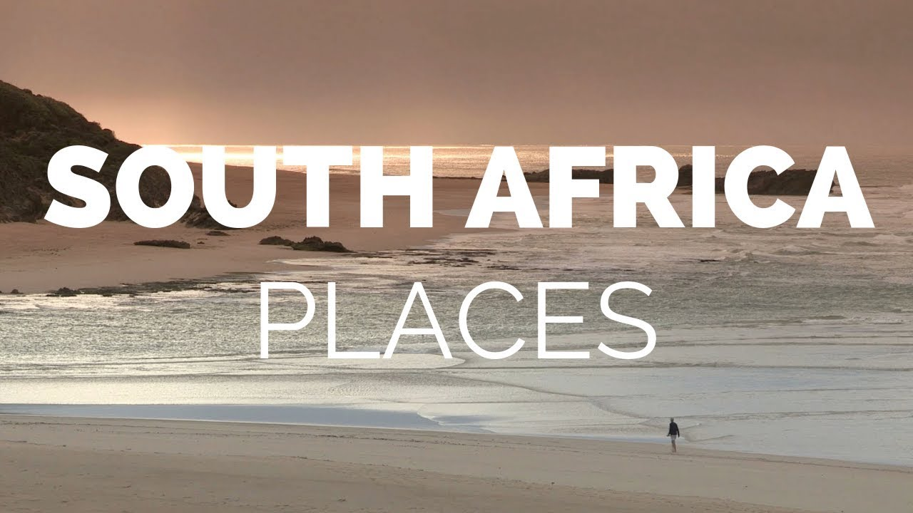

【南非十大最佳旅游胜地 - 旅行视频】
Summary: South Africa offers diverse attractions including fine weather, scenery, beaches, modern accommodations, and cuisine, along with unique adventures like safaris and shark diving. The video highlights top destinations such as Blyde River Canyon, Cape Winelands, Addo Elephant National Park, Hermanus, Durban, Hluhluwe-Umfolozi Game Reserve, Garden Route, Drakensberg, Kruger National Park, and Cape Town.
摘要： 南非拥有多样化的旅游景点，包括宜人的天气、美景、海滩、现代化住宿和美食，以及独特的冒险体验如狩猎和与大白鲨潜水。视频重点介绍了布莱德河峡谷、开普酒乡、阿多大象国家公园、赫曼努斯、德班、赫卢赫卢韦-乌姆福洛济野生动物保护区、花园大道、德拉肯斯堡、克鲁格国家公园和开普敦等顶级目的地。

⏱️ Estimated Reading Time: 8 min
South Africa has all of the features that travelers long for in a vacation destination: fine weather, gorgeous scenery, great beaches, modern accommodations and superb cuisine.
南非拥有旅行者梦寐以求的度假胜地的一切特征：宜人的天气、壮丽的景色、美丽的海滩、现代化的住宿和一流的美食。
The southern tip of Africa also offers an exotic array of once-in-a-lifetime adventures, from off-roading on a safari to diving with great white sharks.
非洲南端还提供了一系列异国情调的终生难忘的冒险活动，从越野狩猎到与大白鲨潜水。
It’s hard to name another holiday destination that offers as much variety.
很难找到另一个提供如此多样性的度假胜地。
Here’s a look ash the best places to visit in South Africa.
以下是南非最佳旅游胜地的介绍。
Number 10. Blyde River Canyon Blyde River Canyon is the second largest canyon in Africa, after the Fish River Canyon, although it is much greener due to its lush subtropical foliage.
第十名：布莱德河峡谷。布莱德河峡谷是非洲第二大峡谷，仅次于鱼河峡谷，但由于其茂密的亚热带植被，这里更加郁郁葱葱。
Walking treks through the rich diversity of flora and fauna filled canyon offer views of magnificent escarpments, waterfalls and ancient geological phenomenon.
徒步穿越充满丰富动植物的峡谷，可以欣赏到壮丽的悬崖、瀑布和古老的地质奇观。
Visitors have the opportunity to encounter all five of South Africa’s primates here, as well as hippos and crocodiles near the wetlands of Swadini Dam.
游客有机会在这里遇到南非所有五种灵长类动物，以及在斯瓦迪尼大坝湿地附近的河马和鳄鱼。
Number 9. Cape Winelands The fertile valleys of the Cape Winelands are surrounded by majestic mountains, sleepy villages, fruitful orchards and some of the lushest scenery in South Africa.
第九名：开普酒乡。开普酒乡肥沃的山谷被雄伟的山脉、宁静的村庄、果实累累的果园和南非最葱郁的景色所环绕。
Visitors can follow the Wine Routes of the Cape to visit the vineyards of the country’s finest winemakers, whose sherries, ports, brandies and intriguing whites and reds are world famous for their delicate flavors and savory palatability.
游客可以沿着开普的酒庄路线，参观南非最优秀的酿酒师的葡萄园，他们的雪利酒、波特酒、白兰地以及迷人的白葡萄酒和红葡萄酒以其精致的风味和可口的味道闻名于世。
Number 8. Addo Elephant National Park Located in the Eastern Cape region of South Africa, the Addo Elephant National Park is one of the country’s larger parks.
第八名：阿多大象国家公园。阿多大象国家公园位于南非东开普地区，是该国较大的公园之一。
The Park is famous for its elephant population that has a special, brownish skin color due to the red soil.
该公园以其大象种群而闻名，由于红土的原因，这些大象的皮肤呈现出特殊的棕色。
Amongst the elephants other animals, like ostriches, antelopes and warthogs can be seen.
在大象之外，还可以看到鸵鸟、羚羊和疣猪等其他动物。
As part of the park’s expansion, a group of lions and a group of spotted hyenas have been introduced to the park in 2004.
作为公园扩建的一部分，2004年引入了一群狮子和一群斑点鬣狗。
Number 7. Hermanus Located on the southern coast of Africa near the Garden Route, Hermanus is famous for its shore-based whale-watching.
第七名：赫曼努斯。赫曼努斯位于非洲南海岸，靠近花园大道，以其岸上观鲸而闻名。
The sheltered, shallow waters attract southern right whales that migrate to the region each year to mate and breed.
受保护的浅水区吸引了南露脊鲸每年迁徙到该地区交配和繁殖。
A 6 mile long cliff-side walk with built-in telescopes and benches offers visitors plenty of opportunities to view these social animals as they raise their flukes in the sea breezes.
一条6英里长的悬崖步道配有内置望远镜和长椅，为游客提供了大量机会观察这些社交动物在海风中扬起尾鳍。
Whale-watching boat tours are available as well.
还可以参加观鲸船游。
Number 6. Durban South Africa’s second-largest city, Durban is located on the eastern coast.
第六名：德班。德班是南非第二大城市，位于东海岸。
Durban’s subtropical climate, scenic beaches and close proximity to Johannesburg have made the coastal city a popular vacation destination for South Africans.
德班的亚热带气候、风景优美的海滩和靠近约翰内斯堡的地理位置使其成为南非人喜爱的度假胜地。
The English Colonial architecture that once dominated the city has been enlivened by a mix of Zulu murals, Islamic mosques, Hindu temples and Christian churches.
曾经主导这座城市的英国殖民建筑如今因祖鲁壁画、伊斯兰清真寺、印度教寺庙和基督教教堂的混合而焕发生机。
Number 5. Hluhluwe-Umfolozi Game Reserve As the only park under a formal conservation effort in KwaZulu Natal where you can see the Big Five – lions, elephants, leopards, buffalo and rhinoceros – the Hluhluwe-Umfolozi Game Reserve offers visitors wildlife viewing opportunities second to none.
第五名：赫卢赫卢韦-乌姆福洛济野生动物保护区。作为夸祖鲁-纳塔尔省唯一一个正式保护的公园，游客可以在这里看到“五大动物”——狮子、大象、豹子、水牛和犀牛，赫卢赫卢韦-乌姆福洛济野生动物保护区为游客提供了无与伦比的野生动物观赏机会。
Wildlife enthusiasts may enjoy the vast expanses of native plants and native animals during guided walks, self-guided drives, or opt for a thrilling viewing experience by boat along the Hluhluwe dam.
野生动物爱好者可以在导游带领的徒步、自驾游中欣赏广阔的本地植物和动物，或选择乘船沿赫卢赫卢韦大坝进行刺激的观赏体验。
Number 4. Garden Route The Garden Route is a scenic stretch of the south-eastern coast of South Africa.
第四名：花园大道。花园大道是南非东南海岸的一段风景优美的路线。
It extends from Mossel Bay in the Western Cape to the Storms River in the Eastern Cape.
它从西开普省的莫塞尔湾延伸到东开普省的风暴河。
The name comes from the diverse vegetation encountered here and the numerous lagoons and lakes dotted along the coast.
这个名字来源于这里多样的植被以及沿海点缀的众多泻湖和湖泊。
It includes some of the best places to visit in South Africa including Knysna, Plettenberg Bay and Nature’s Valley.
它包括南非一些最佳旅游胜地，如克尼斯纳、普利登堡湾和自然谷。
Number 3. Drakensberg The Drakensberg is a mountainous region that forms the boundary between South Africa and the mountain kingdom of Lesotho, and offers some of the country’s most awe-inspiring landscapes.
第三名：德拉肯斯堡。德拉肯斯堡是一个山区，形成了南非和山地王国莱索托的边界，并提供了南非一些最令人惊叹的景观。
The name ‘Drakensberg’ is derived from the Dutch, meaning “mountains of the dragon”, which truly captures something of the mountain’s otherworldly atmosphere.
“德拉肯斯堡”这个名字源自荷兰语，意为“龙之山”，真实地捕捉了这座山脉超凡脱俗的氛围。
Number 2. Kruger National Park Covering a wide stretch of bush and savannah in the northern reaches of South Africa, Kruger National Park borders the countries of Mozambique and Zimbabwe.
第二名：克鲁格国家公园。克鲁格国家公园覆盖了南非北部广阔的灌木丛和草原，与莫桑比克和津巴布韦接壤。
For its dense animal population and the variety of its flora and fauna, the park is considered the jewel of South Africa’s extensive park system.
由于其密集的动物种群和多样的动植物，该公园被认为是南非庞大公园系统中的明珠。
Numerous well-kept tarred and gravel roads have made the park a favorite choice for self-driving expeditions.
众多维护良好的柏油路和碎石路使该公园成为自驾探险的热门选择。
Number 1. Cape Town Located on the southwest tip of South Africa’s Western Cape Province, Cape Town is the most popular tourist destination in all of Africa.
第一名：开普敦。开普敦位于南非西开普省的西南端，是整个非洲最受欢迎的旅游目的地。
The metropolis enjoys a mild, Mediterranean climate, a well-developed infrastructure and a spectacular natural setting.
这座大都市享有温和的地中海气候、发达的基础设施和壮丽的自然景观。
Cape Town’s center is located in a relatively small area between Table Mountain and Table Bay.
开普敦的中心位于桌山和桌湾之间一个相对较小的区域。
The city also serves as a home base for exploring nearby attractions, including the region’s many diverse beaches as well as the rolling hills and valleys of the Winelands.
这座城市也是探索附近景点的基地，包括该地区众多多样的海滩以及酒乡起伏的山丘和山谷。